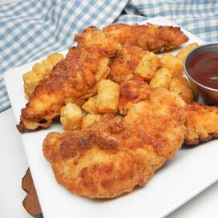

Buttermilk Chicken Strips

Crunchy on the outside but moist on the inside!
- 1 1/2 pounds chicken tenders
- 2 cups buttermilk
- 1 1/2 cups all purpose flour
- 1 tablespoon salt
- 1 tablespoon garlic salt
- 2 teaspoons mustard powder
- 1 teaspoon ground paprika
- 1 teaspon ground black pepper
- 2 cups peanut oil, or as needed
- salt and ground peper to taste
- Soak chicken tenders in buttermilk for 20 to 30 minutes in the refrigerator.
- While chicken is soaking, combine flour, salt, garlic salt, mustard powder, paprika, and pepper in a large brown bag.
- Heat oil in a deep-fryer or large saucepan to 375 degrees F (190 degrees C).
- Drain chicken and shake lightly to remove excess buttermilk. Chicken should still be damp. Drop chicken into the bag of seasoned flour and shake until well coated.
- Drop chicken into hot oil, about 6 pieces at a time, depending on the size of your pot. Cook until golden brown, crispy, and no longer pink in the centers, 6 to 8 minutes. Remove from oil and drain on paper towels. Sprinkle with salt and pepper while still warm